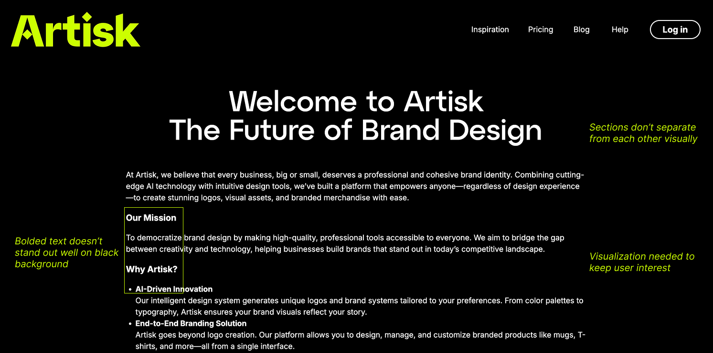
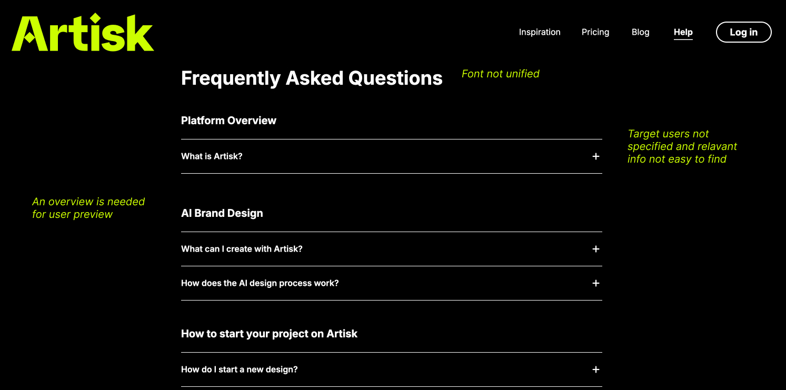
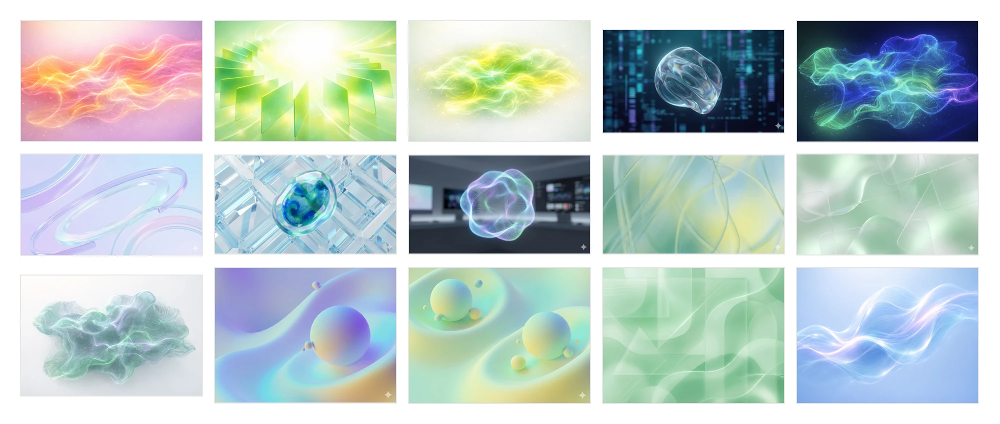
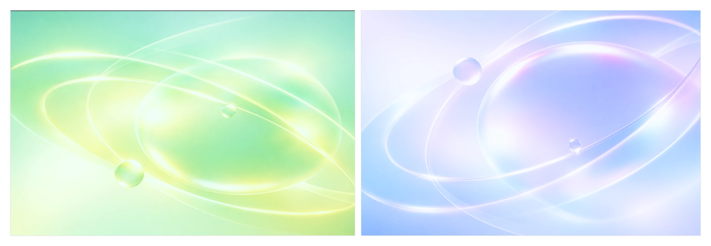
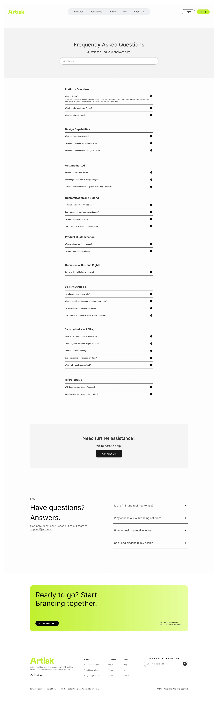
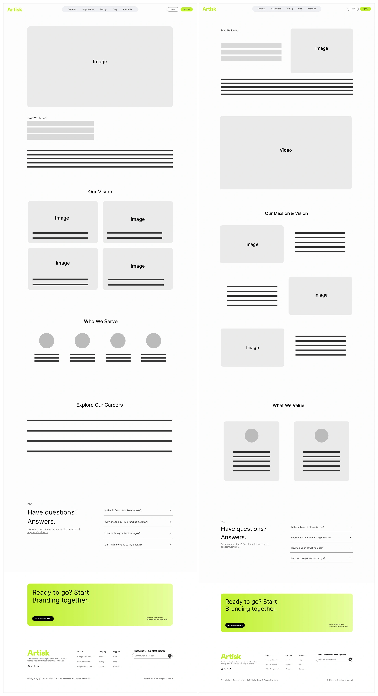
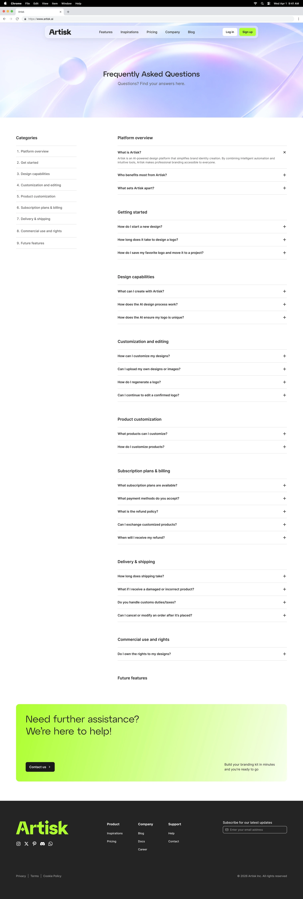
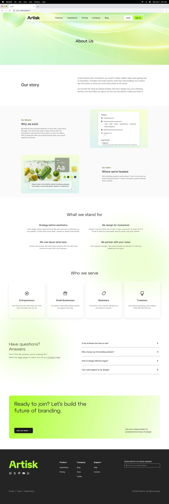

Room for the title
The banner carries the page title, so it needs a calm zone for the type to sit in. Edge-to-edge texture ruled out the crystal lattice, the green maze and the electric cloud.
Designed the FAQ and About pages for an AI branding tool, from audit through final visual.

Artisk builds AI-powered design tools for brands: logo and brand-kit generation for founders and small teams who can't hire an agency. The component framework and site IA were already settled when I joined. The FAQ and About pages were not.
Both are task pages with different tasks. One is where a user solves a specific question without contacting support. The other is where a user reads to decide whether to trust the product. Each was failing its own job in a different way.
The FAQ held 25 questions in one ungrouped stack, so anyone arriving with a single question had to scan all of them. The About page ran as continuous narrative with no hierarchy, nothing pacing the read or separating one idea from the next.


Artisk's visual world is quiet UI with one loud accent: white surfaces, generous spacing, a single lime green, and soft translucent 3D forms as the only imagery. The banner is the one large image on each page, so it had to extend that world rather than compete with it.
I generated seventeen candidates and cut them against two rules.

The banner carries the page title, so it needs a calm zone for the type to sit in. Edge-to-edge texture ruled out the crystal lattice, the green maze and the electric cloud.
One focal form, re-rendered in a second hue, becomes a signature across both pages. Matte clay was the wrong material, and the mist and silk compositions were shapeless.
Only the two orbital compositions passed both. FAQ took the lavender, About the green: separate identities that still read as one set.

Grouped by topic, the first screen shows category headings instead of twenty-five separate questions. Every answer stays collapsed until it is asked for.
Wireframed before any visual was applied, because the grouping had to hold on its own. The numbered rail that mirrors the categories came later, at the visual stage.

Same information, rebuilt around a reading rhythm. The page breaks into five named sections: Our story, Mission and Vision, What we stand for, Who we serve, and an FAQ block to close. Two-column rows alternate image and text so the eye has a reason to keep moving, and hierarchy comes from position and white space rather than type size.
Two structural passes, shown side by side below.

Desktop first. The FAQ keeps its 260px category rail beside the answers down to 900px, where the rail becomes a numbered index stacked above them and goes on working as a jump list. On About, the alternating image and text rows stack at 992px, the two-column value grid collapses at the same point, and the four audience cards step to two and then to one at 640px.
Two details took the most care. The alternation is dropped rather than mirrored, so a stacked page reads in one order instead of leaving every second row image-first. And the hand-set line breaks in the Mission and Vision copy switch off below 992px, so the paragraphs rewrap instead of breaking mid-thought.
Toggle between the two pages. Each is shown at its full height and scrolls inside the frame, rather than being cropped to a single screen.


Neither page shipped with analytics or user testing, so I can say the structure is defensible but not that it works. That gap is the honest limit of this project.
With instrumentation, the FAQ is the easier of the two to measure: category expand rate, search usage, and support-ticket volume. Ticket volume is the real signal, since an FAQ that does its job should pull tickets down. For the About page I'd watch scroll depth and how many readers reach the CTA at the bottom.